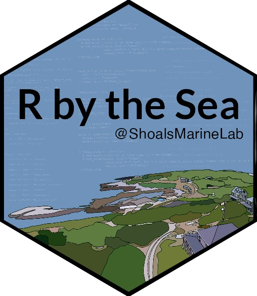
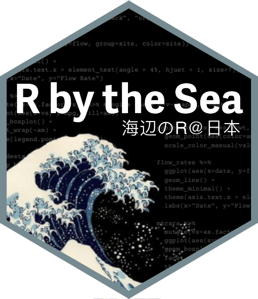

R by the Sea
I co-teach “R by the Sea”, a hands-on data science workshop for marine ecologists, with my husband Easton White who runs the Quantitative Marine Ecology Lab at the University of New Hampshire. It’s a rewarding opportunity to merge data science education with real-world applications in marine ecology.

R by the Sea @ Shoals Marine Lab is a two-week boot camp style course designed to help you harness the power of R for ecological and environmental research through project-based learning. Check out the R by the Sea webpage. It contains resources for the most recent iteration of this course.
For more information on upcoming offerings and enrolling in the course, check out the Shoals Marine Lab “R by the Sea” website. The course typically runs in May.

R by the Sea @ Japan 2025 is a one-week boot camp style course taught at the University of Tohoku in Sendai, Japan in January 2025. Check out the R by the Sea Japan webpage for more details.